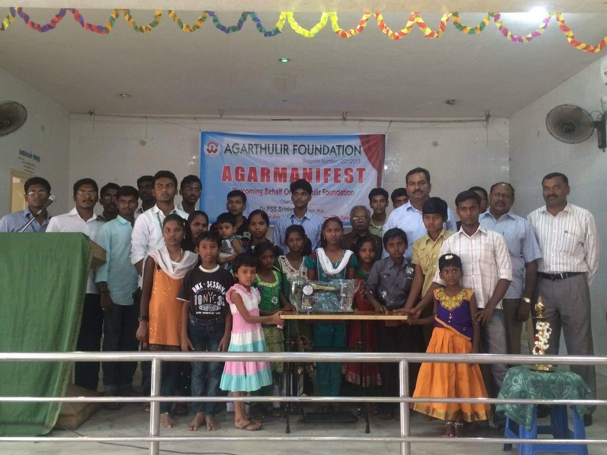
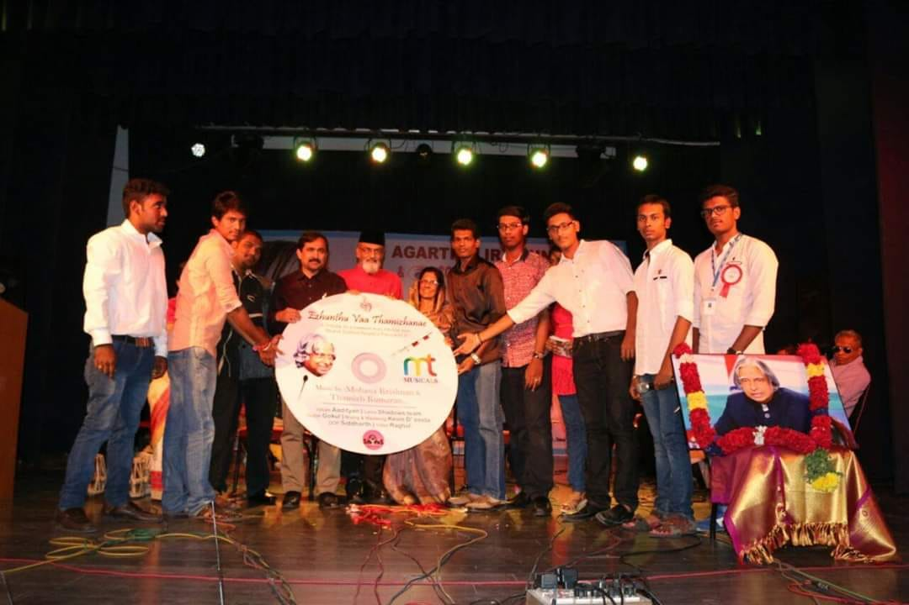

<!--
  Generated template for the ImagePage page.

  See http://ionicframework.com/docs/components/#navigation for more info on
  Ionic pages and navigation.
-->
<ion-header>

  <ion-navbar>
    <ion-title>image</ion-title>
  </ion-navbar>

</ion-header>


    <ion-content class="card-background-page">

        <ion-card>
         
          
          <div class="card-title">Agarmanifest</div>
          <div class="card-subtitle">10 Images</div>
        </ion-card>
      
        <ion-card>
            
          <div class="card-title">Clean India</div>
          <div class="card-subtitle">6 Images</div>
        </ion-card>
      
        <ion-card>
            
          <div class="card-title"> Agarmanifest</div>
          <div class="card-subtitle">10 Images</div>
        </ion-card>
      
        <ion-card>
            
          <div class="card-title">Agarmanifest</div>
          <div class="card-subtitle">28 Images</div>
        </ion-card>
      
      </ion-content>

